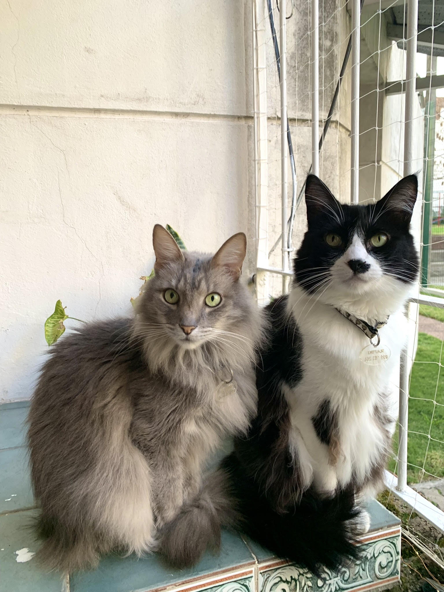

Mi nombre es Jimena, tengo 27 años y vivo en Buceo, Montevideo.
Vivo con mi pareja y mis dos gatitos: Rafiki y Grisecito.
Ellos son los gatos mas compañeros, siempre están juntos. Nosotros decimos que somos una hermosa familia de cuatro.

Actualmente trabajo en soporte y administración para una empresa dedicada a la facturación electrónica. También estoy estudiando programación web en JAP. Adiconalmente este año arranqué con mucho amor un nuevo emprendimiento, vendo armazones y lentes.
En mi tiempo libre me gusta disfrutar mi hogar, sentarme a escuchar música y dejar que todo fluya. También disfruto de estar con mi gente, familia y amigos. Un hobbie que puedo destacar sería cocinar y las manualidades en general. Me gusta hacer creaciones hilo encerado. Pienso que me gusta todo lo que tiene que ver con manualidades ya que en mi infancia recuerdo que mi tía siempre compraba figuras en yeso y pasabamos tardes enteras riendo y pintando. Suelo recordarlo con una sonrisa.
Me gusta pensar que las cosas más valiosas de la vida justamente, no son cosas.
Dejo el fragmento de la canción "Entra a mi Hogar" dedicada a esas amistades que mas allá del tiempo y las circunstancias siempre están:
Abre la puerta y entra a mi hogar
Amigo mío, que hay un lugar
Deja un momento de caminar
Siéntate un rato a descansar
Toma mi vino y come mi pan
Tenemos tiempo de conversar
Hay alegría en mi corazón
Con tu presencia, me traes el sol
Manos sencillas, manos de amor
Tienden la mesa y le dan calor
El pan caliente sobre el mantel
El vino bueno y un gusto a miel
Habrá en mi casa mientras estés
Qué felicidad, amigo mío
Tenerte conmigo y recordar
Hacer que florezca pecho adentro
Ardientes capullos de amistad
Toma mi guitarra y dulcemente
Cántame con ella una canción
Que quiero guardar en mi memoria
El grato recuerdo de tu voz